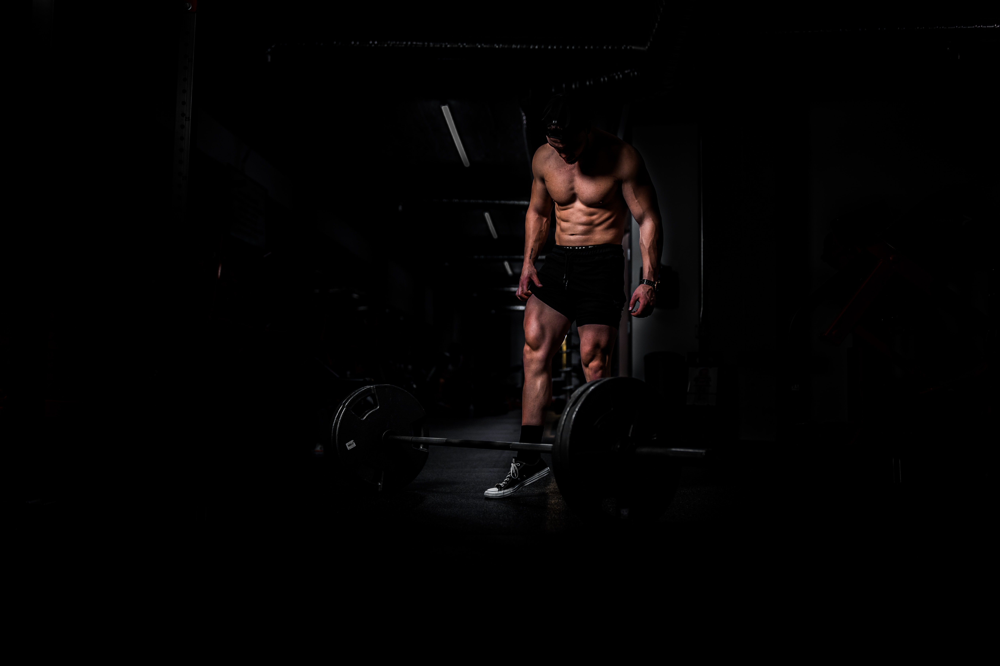

我愛健身網站
GYM WEB
健身，英文稱為workout，健身這兩個字拆開來的意思就是健康身體，
通過各種運動方式或方法來增強力量、增加肌肉量、柔韌性、耐力，
以及提高協調和控制身體各部分的能力來使我們的身體更強健。
除了塑造好身材，透過健身可以刺激我們身體的肌肉， 再搭配飲食的控制，這能大大幫助我們的肌肉量增加，以及讓我們的肌肉更加的結實。
如果你對健身仍然保持著懷疑的態度，那你大可以去看看你喜歡的健身老戲骨幹， 他們是如何做到年過50/60歲，依舊在舞臺上或者是電影螢幕上綻放光彩。 答案就是堅持運動健身!
健身的10個好處
- 增加基礎代謝率
- 預防疾病和提高免疫力
- 改善心情
- 改善睡眠
- 增加自信
- 增強記憶力
- 增強心肺能力
- 提升睡眠品質
- 釋放工作的壓力
- 增加肌肉助於減肥



好文章連結
>
引用網址:https://fitnesstwenty.com/benefits-of-workout/
一天所需卡路里
| 每天活動量 | 體重過輕者所需熱量 | 體重正常者所需熱量 | 體重過重、肥胖者所需熱量 |
|---|---|---|---|
| 輕度工作 | 35大卡 X 目前體重（公斤） | 30大卡 X 目前體重（公斤） | 20~25大卡 X 目前體重（公斤） |
| 中度工作 | 40大卡 X 目前體重（公斤） | 35大卡 X 目前體重（公斤） | 30大卡 X 目前體重（公斤） |
| 重度工作 | 45大卡 X 目前體重（公斤） | 40大卡 X 目前體重（公斤） | 35大卡 X 目前體重（公斤） |
計算BMI: 一位民眾身高160公分，體重65公斤，BMI25.4kg/m2(=65÷1.6÷1.6)，體重屬於「過重」。
計算所需熱量: 因他的工作為坐辦公室，屬輕量工作，每天攝取熱量應在1300至1625大卡之間(=20~25大卡*65公斤)。
健身影片
本地端影片